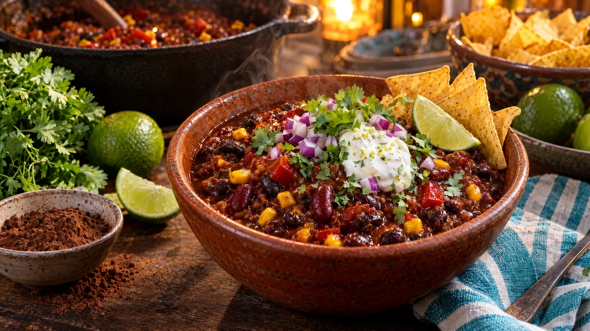

RESTFEST · RECEPTHuvudrätt
Chili sin carne med svarta bönor, kakao och limecrème
Två burkar bönor, en burk krossade tomater och en sked kakao puttrar till en mörk, rökig och mustig chili som smakar som om den stått på spisen hela dagen. Den serveras med syrlig limecrème, koriander och rödlök. En gryta som räcker till hela veckans matlådor, helt vegansk.
- Förberedelse
- 10 min
- Tillagning
- 35 min
- Portioner
- 4–6
- Nivå
- Nybörjare
 Det här behöver du
Det här behöver du
JÄMFÖRT MED DIN KYL
Tryck på + vid det du behöver köpa.
Chili
Limecrème
Till servering
Gör så här
- Rör ihop havreyoghurt, limeskal, limesaft och salt till limecrème och ställ kallt.
- Hacka löken, tärna paprikan och hacka vitlöken.
- Fräs lök och paprika i oljan i en stor kastrull på medelvärme i 6–8 minuter, tills allt är mjukt. Tillsätt vitlök, tacokrydda och tomatpuré och fräs 1 minut till.
- Rör ner bönor, krossade tomater, majs, vatten, kakao och socker.
- Låt sjuda utan lock i 25 minuter, tills chilin har tjocknat. Rör då och då och mosa några av bönorna mot kastrullens kant, så blir chilin krämigare.
- Smaka av med limesaft och salt.
Dekoration och servering
- Skeda chilin i djupa skålar med ris eller tortillachips vid sidan.
- Toppa med en klick limecrème, koriander och finhackad rödlök, och servera med limeklyftor.
- Chilin blir ännu godare dagen efter och går bra att frysa i portioner.
- Använd rester som fyllning i tacos eller bakad potatis.
Mått och ugnstemperaturer
Måtten är svenska (dl, msk, tsk, krm). Ugnstemperaturerna gäller vanlig ugn med över- och undervärme; med varmluft, sänk med 20 grader.